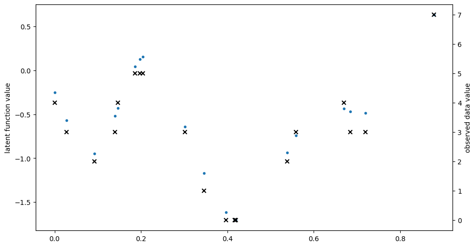
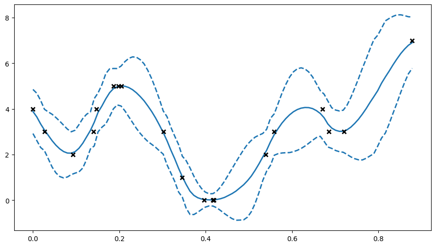
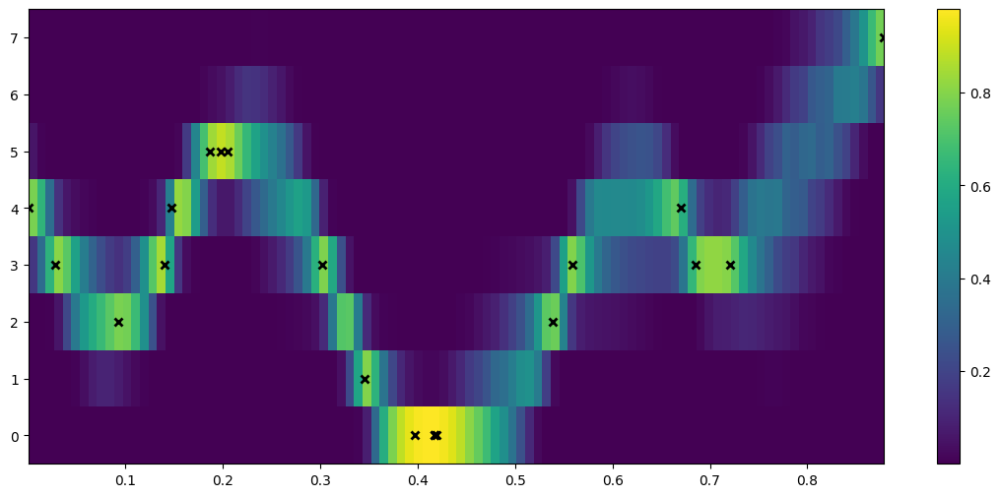
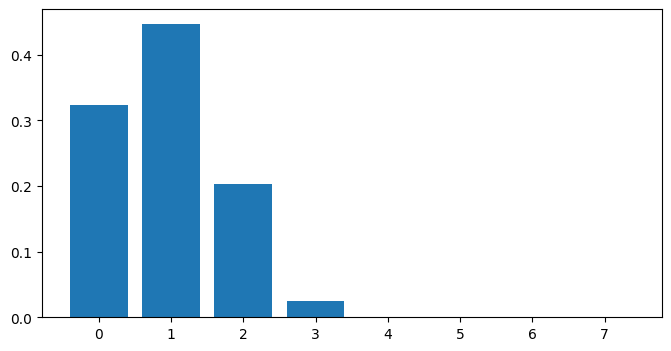

Ordinal regression#
Ordinal regression aims to fit a model to some data \((X, Y)\), where \(Y\) is an ordinal variable. To do so, we use a VPG model with a specific likelihood (gpflow.likelihoods.Ordinal).
[1]:
import matplotlib.pyplot as plt
import numpy as np
import gpflow
%matplotlib inline
plt.rcParams["figure.figsize"] = (12, 6)
np.random.seed(123) # for reproducibility
2023-03-16 09:37:31.237744: I tensorflow/core/platform/cpu_feature_guard.cc:193] This TensorFlow binary is optimized with oneAPI Deep Neural Network Library (oneDNN) to use the following CPU instructions in performance-critical operations: AVX2 AVX512F FMA
To enable them in other operations, rebuild TensorFlow with the appropriate compiler flags.
2023-03-16 09:37:31.376593: W tensorflow/stream_executor/platform/default/dso_loader.cc:64] Could not load dynamic library 'libcudart.so.11.0'; dlerror: libcudart.so.11.0: cannot open shared object file: No such file or directory
2023-03-16 09:37:31.376613: I tensorflow/stream_executor/cuda/cudart_stub.cc:29] Ignore above cudart dlerror if you do not have a GPU set up on your machine.
2023-03-16 09:37:31.410474: E tensorflow/stream_executor/cuda/cuda_blas.cc:2981] Unable to register cuBLAS factory: Attempting to register factory for plugin cuBLAS when one has already been registered
2023-03-16 09:37:32.156265: W tensorflow/stream_executor/platform/default/dso_loader.cc:64] Could not load dynamic library 'libnvinfer.so.7'; dlerror: libnvinfer.so.7: cannot open shared object file: No such file or directory
2023-03-16 09:37:32.156367: W tensorflow/stream_executor/platform/default/dso_loader.cc:64] Could not load dynamic library 'libnvinfer_plugin.so.7'; dlerror: libnvinfer_plugin.so.7: cannot open shared object file: No such file or directory
2023-03-16 09:37:32.156385: W tensorflow/compiler/tf2tensorrt/utils/py_utils.cc:38] TF-TRT Warning: Cannot dlopen some TensorRT libraries. If you would like to use Nvidia GPU with TensorRT, please make sure the missing libraries mentioned above are installed properly.
[2]:
# make a one-dimensional ordinal regression problem
# This function generates a set of inputs X,
# quantitative output f (latent) and ordinal values Y
def generate_data(num_data):
# First generate random inputs
X = np.random.rand(num_data, 1)
# Now generate values of a latent GP
kern = gpflow.kernels.SquaredExponential(lengthscales=0.1)
K = kern(X)
f = np.random.multivariate_normal(mean=np.zeros(num_data), cov=K).reshape(
-1, 1
)
# Finally convert f values into ordinal values Y
Y = np.round((f + f.min()) * 3)
Y = Y - Y.min()
Y = np.asarray(Y, np.float64)
return X, f, Y
np.random.seed(1)
num_data = 20
X, f, Y = generate_data(num_data)
plt.figure(figsize=(11, 6))
plt.plot(X, f, ".")
plt.ylabel("latent function value")
plt.twinx()
plt.plot(X, Y, "kx", mew=1.5)
plt.ylabel("observed data value")
2023-03-16 09:37:35.017108: W tensorflow/stream_executor/platform/default/dso_loader.cc:64] Could not load dynamic library 'libcuda.so.1'; dlerror: libcuda.so.1: cannot open shared object file: No such file or directory
2023-03-16 09:37:35.017134: W tensorflow/stream_executor/cuda/cuda_driver.cc:263] failed call to cuInit: UNKNOWN ERROR (303)
2023-03-16 09:37:35.017154: I tensorflow/stream_executor/cuda/cuda_diagnostics.cc:156] kernel driver does not appear to be running on this host (ddf8d70d3162): /proc/driver/nvidia/version does not exist
2023-03-16 09:37:35.017411: I tensorflow/core/platform/cpu_feature_guard.cc:193] This TensorFlow binary is optimized with oneAPI Deep Neural Network Library (oneDNN) to use the following CPU instructions in performance-critical operations: AVX2 AVX512F FMA
To enable them in other operations, rebuild TensorFlow with the appropriate compiler flags.
[2]:
Text(0, 0.5, 'observed data value')

[3]:
# construct ordinal likelihood - bin_edges is the same as unique(Y) but centered
bin_edges = np.array(np.arange(np.unique(Y).size + 1), dtype=float)
bin_edges = bin_edges - bin_edges.mean()
likelihood = gpflow.likelihoods.Ordinal(bin_edges)
# build a model with this likelihood
m = gpflow.models.VGP(
data=(X, Y), kernel=gpflow.kernels.Matern32(), likelihood=likelihood
)
# fit the model
opt = gpflow.optimizers.Scipy()
opt.minimize(m.training_loss, m.trainable_variables, options=dict(maxiter=100))
[3]:
message: STOP: TOTAL NO. of ITERATIONS REACHED LIMIT
success: False
status: 1
fun: 25.487473214735196
x: [-2.000e+00 -2.362e-01 ... 5.467e+00 -1.450e+00]
nit: 100
jac: [-6.701e-02 -2.637e-02 ... -8.499e-03 -9.853e-03]
nfev: 116
njev: 116
hess_inv: <233x233 LbfgsInvHessProduct with dtype=float64>
[4]:
# here we'll plot the expected value of Y +- 2 std deviations, as if the distribution were Gaussian
plt.figure(figsize=(11, 6))
X_data, Y_data = (m.data[0].numpy(), m.data[1].numpy())
Xtest = np.linspace(X_data.min(), X_data.max(), 100).reshape(-1, 1)
mu, var = m.predict_y(Xtest)
(line,) = plt.plot(Xtest, mu, lw=2)
col = line.get_color()
plt.plot(Xtest, mu + 2 * np.sqrt(var), "--", lw=2, color=col)
plt.plot(Xtest, mu - 2 * np.sqrt(var), "--", lw=2, color=col)
plt.plot(X_data, Y_data, "kx", mew=2)
[4]:
[<matplotlib.lines.Line2D at 0x7f35e0530310>]

[5]:
## to see the predictive density, try predicting every possible discrete value for Y.
def pred_log_density(m):
Xtest = np.linspace(X_data.min(), X_data.max(), 100).reshape(-1, 1)
ys = np.arange(Y_data.max() + 1)
densities = []
for y in ys:
Ytest = np.full_like(Xtest, y)
# Predict the log density
densities.append(m.predict_log_density((Xtest, Ytest)))
return np.vstack(densities)
[6]:
fig = plt.figure(figsize=(14, 6))
plt.imshow(
np.exp(pred_log_density(m)),
interpolation="nearest",
extent=[X_data.min(), X_data.max(), -0.5, Y_data.max() + 0.5],
origin="lower",
aspect="auto",
cmap=plt.cm.viridis,
)
plt.colorbar()
plt.plot(X, Y, "kx", mew=2, scalex=False, scaley=False)
[6]:
[<matplotlib.lines.Line2D at 0x7f35e914c4f0>]

[7]:
# Predictive density for a single input x=0.5
x_new = 0.5
Y_new = np.arange(np.max(Y_data + 1)).reshape([-1, 1])
X_new = np.full_like(Y_new, x_new)
# for predict_log_density x and y need to have the same number of rows
dens_new = np.exp(m.predict_log_density((X_new, Y_new)))
fig = plt.figure(figsize=(8, 4))
plt.bar(x=Y_new.flatten(), height=dens_new.flatten())
[7]:
<BarContainer object of 8 artists>
